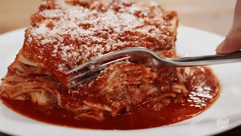

"Lasagna"

Description
Lasagna, a timeless Italian classic, is a symphony of rich flavors and textures. Layers of tender pasta, creamy cheese, and savory sauce create a comforting and indulgent dish that's perfect for sharing with loved ones.
To embark on your lasagna-making journey, you'll need the following ingredients:
Ingredients:
- 9 lasagna noodles
- 1 pound (450g) ground beef or Italian sausage
- 1 can (28 ounces) crushed tomatoes
- 2 teaspoons dried basil
- Salt and pepper to taste
- 1 1/2 cups (170g) shredded mozzarella cheese
- 1 cup (115g) ricotta cheese
- 1/4 cup (25g) grated Parmesan cheese
Steps
- Preheat your oven to 375°F (190°C).
- Cook the lasagna noodles according to the package instructions. Drain and set aside.
- In a skillet, brown the ground beef or Italian sausage over medium heat. Add crushed tomatoes, dried basil, salt, and pepper. Simmer for 10 minutes.
- In a bowl, combine ricotta cheese, half of the shredded mozzarella, and grated Parmesan.
- Assemble the lasagna: Spread a thin layer of the meat sauce in a baking dish. Place a layer of cooked noodles over it. Spread half of the cheese mixture on the noodles.
- Repeat the layers: meat sauce, noodles, and cheese mixture.
- Finish with a layer of meat sauce and sprinkle the remaining shredded mozzarella on top.
- Bake in the preheated oven for about 25 minutes, until the cheese is melted and bubbly.
- Allow the lasagna to rest for a few minutes before serving. Slice and enjoy the delectable layers of flavor and comfort.